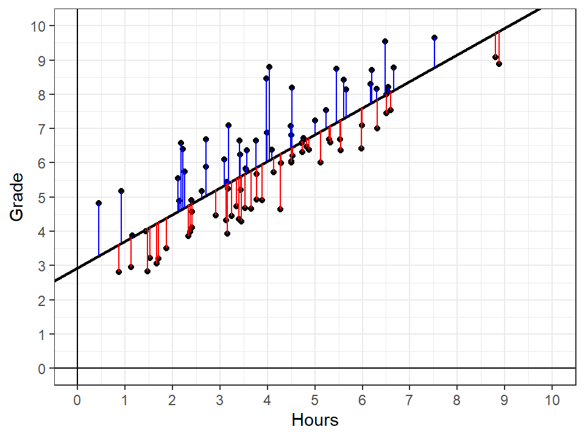
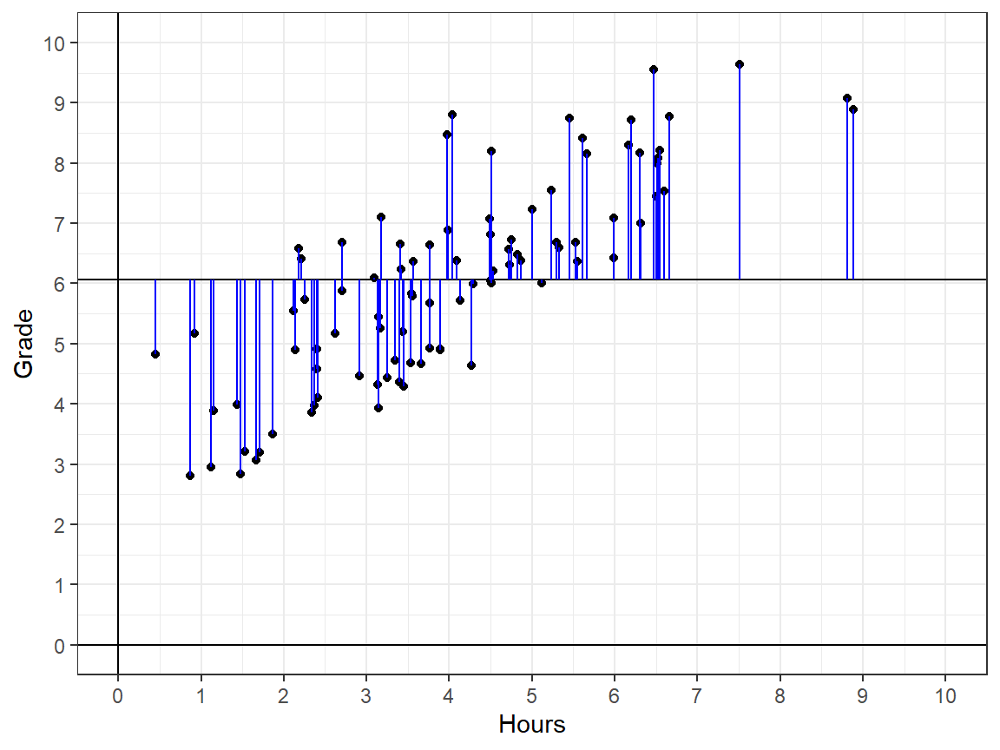
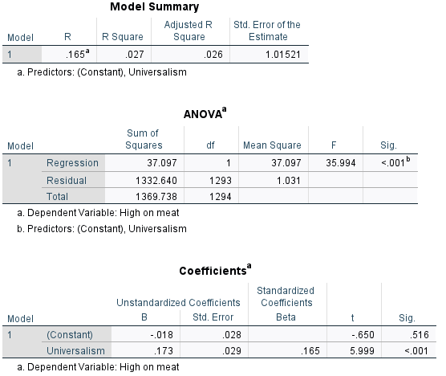
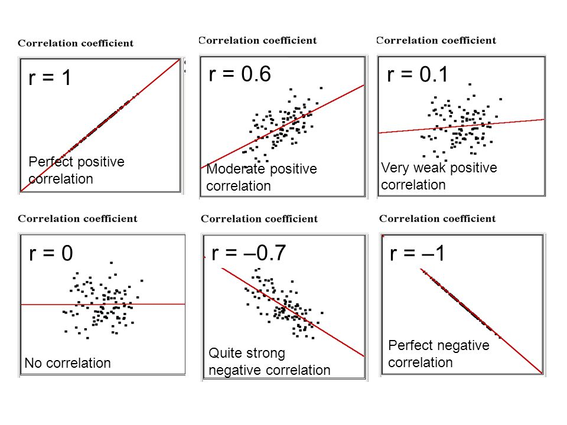
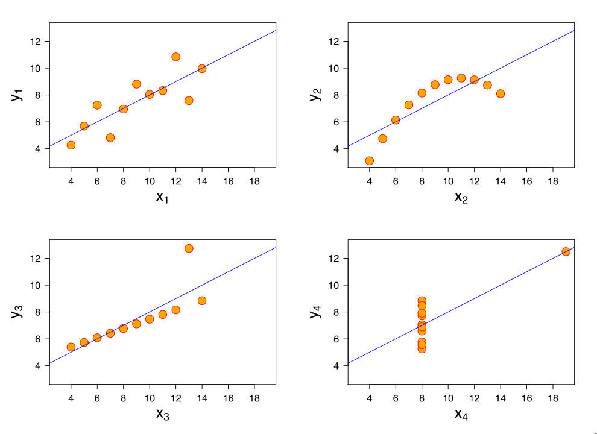

Lecture 6 - GLM II
Caspar J. van Lissa
2023-08-17
Sums of Squares
Prediction error
Last week, we discussed linear regression
- It describes the relationship between a predictor X and outcome Y as a diagonal line
- Given individual value \(X_i\), this line predicts a value \(\hat{Y}_i\)
- This prediction will be a bit wrong for every individual
- The regression line, by definition, is the line that gives the “least prediction error” on average
- Today, we will learn how that is determined

Ordinary least squares
Linear regression models are estimated using the “ordinary least squares” method
- It minimizes the total prediction error
- So what is this “total prediction error”? Let’s define it
Can we simply add the prediction errors for the 92 students below?

Sum of Squared Errors
Problem: Because the regression line, by definition, goes exactly through the “middle” of the data, the sum of all prediction errors is always exactly 0
Sum of positive prediction errors: 36.25
Sum of prediction errors: -36.25
Sum of Squared Errors (SSE)
The positive errors are exactly negated by the negative errors
Solution: We take the square of the prediction errors to get rid of the negatives
- This allows us to take a sum of squared errors; this is always a positive number
- We can then find the regression line that gives the smallest “sum of squared errors”
- That regression line also gives the smallest (non-squared) errors, so squaring them doesn’t affect our results
Sum of Squared Errors
Sum of Squared Prediction Errors (= Sum of Squared Errors, SSE):
\[ \sum{(Y_i - \hat{Y}_i)^2} = 84.18 \]
This is the first example of a sum of squares. You will see many more, whenever we’re summing things that can be both positive and negative, and the formula usually looks like:
\[ \sum(\dots-\dots)^2 \]
Ordinary Least Squares
For linear regression, the coefficients can be calculated straightforwardly using matrix algebra (not part of this course)
- This calculation gives, by definition, the line with the smallest possible total prediction error
- Prediction error is defined as “sum of squared errors”
- Therefore, this method is called “ordinary least squares” (= squared errors)
Goodness of fit
By definition, the regression line is the line that best describes the data
- But how well does it describe the data?
- In a way, the SSE describes the goodness of fit: small prediction errors imply good fit
- But SSE is not on a meaningful scale, so we cannot interpret it easily
Solution: We need to compare the SSE to some baseline
Null model
To determine the goodness of fit of our regression line, we compare its SSE to the sum of squares we would obtain if we did not use information from the predictor to predict our outcome
- If you did not include Hours as a predictor, you would predict the mean for each individual
- A regression model without predictors is simply:
- \(Y_i = a + e_i\), where \(e_i \sim N(0, SD_y)\)
- This is called a “null model” (no predictors)
- Its only coefficient \(a\) is just the mean of \(Y\)
Total Sum of Squares
You would predict the mean value of Grade for each individual, \(\bar{Y}\)
The sum of squared distances between the mean and individual observations is called Total Sum of Squares, TSS: \(\sum{(Y_i-\bar{Y}_i)^2} = 255.82\)
TSS is related to the variance
You’ve seen the TSS before; it is used to calculate the variance (lecture 1)
- \(S_Y^2 = \frac{\sum(Y_i-\bar{Y})^2}{n-1}\)
- This is the “average” squared distance of individual observations to the mean of Y

Regression Sum of Squares
How large is the difference between the total sum of squares and the sum of squared errors?
- In other words: how much of the total sum of squares is explained away by the regression line?
The reduction in sum of squares that occurs by using the regression line to predict observations instead of just the mean is called Regression Sum of Squares, RSS:
It’s the difference between individual predctions and the mean:
\[ \sum{(\hat{Y}_i-\bar{Y})^2} \]
So it follows: Total SS - Error SS = Regression SS
255.82 - 84.18 = 171.64
Sum of Squares demo
Sums of Squares formulas
| Sum | Formula | Also |
|---|---|---|
| SSE | \(\sum{(Y_i - \hat{Y}_i)^2}\) | SST - SSR |
| SST | \(\sum{(Y_i - \bar{Y})^2}\) | SSR + SSE |
| SSR | \(\sum{(\hat{Y}_i - \bar{Y})^2}\) | SST-SSE |
Explained variance
Model fit
We want to describe how well our regression model describes the data
- Can we use the RSS?
Problem: Sums of squares are hard to interpret and cannot be compared from one dataset to another
- Adding even one participant increases the SS, but does not mean the fit is worse
Solution: We standardize the RSS
Explained variance
Which portion of the total sum of squares (TSS) is explained by the regression line (RSS)?
\(\frac{RSS}{TSS} = R^2\)
This gives \(R^2\), the proportion of explained variance
Explained variance
Which portion of the total variance in the dependent variable is explained by the predictor?
(see demo)
In our running example:
\(\frac{171.64}{255.82} = 0.67\)
Tests
Model test
Does the regression model explain significantly more variance than the null-model?
Remember:
- Regression model: \(Y_i = a + b * X_i + e_i\)
- Null model: \(Y_i = a + e_i\) (where \(a\) is just the mean of \(Y\))
Steps for testing
Steps for testing
- Formulate hypotheses
- \(H_0\): \(R^2 = 0\), \(H_A\): \(R^2 > 0\)
- Calculate test statistic
NOTE: \(R^2\) only takes positive values, so we need a probability distribution that only takes positive values. That’s neither the Z- nor the t-distribution.
F-test
Introducing the F-distribution
F-test
The F-test is a ratio of two sources of variance:
\[ F = \frac{\sigma^2_{\text{regression}}}{\sigma^2_{\text{Error}}} = \frac{MS_{\text{regression}}}{MS_{\text{Error}}} = \frac{SSR/(p-1)}{SSE/(n-p)} \]
p: parameters (\(a\) and \(b\)), n: number of participants
- \(df_1\): p-1
- \(df_2\): n-p
Both SS can only be positive, so the F-statistic is always positive, so we use a probability distribution with only positive values.
Reporting results
The regression model explained significant variance in the outcome, \(R^2 = 0.67, F(1, 90) = 183.51, p < .001.\) This means that hours studied explained 0.67*100% of the variance in exam grades.
Correlation
Correlation and regression
Consider the association between X and Y
- If you consider one of them to be the outcome of the other, regression is the correct technique
- \(R^2\) indicates the strength of association between them
- What if you don’t want to label one variable outcome and the other predictor?
Correlation is a measure of the strength and direction of the linear relationship between two variables.
Correlation
A standardized measure of the strength of linear association between two continuous variables
- Standardized: ranges from [-1, 1]
- Sample correlation: \(r\)
- Population correlation: \(\rho\)
- r = -1: Perfect negative association
- r = 0: No association
- r = 1: Perfect positive association
Correlation and regression
Correlation and regression are very closely related
- \(R^2\) (explained variance) for two is literally \(r\), squared: the squared correlation coefficient
- For bivariate regression/correlation. The story is more complex for regression with 2+ predictors
Output in SPSS
Correlation
Correlation increases as:
- The points are closer to the regression line
- The slope is steeper (whether positive or negative)

Correlation
Examples
Be careful
The Anscombe quartet:
All examples below have a correlation of \(r = .70\)
Calculating Correlations
Step 1: Calculate means
| \(X_i\) | \(Y_i\) |
|---|---|
| 1 | 0 |
| 2 | 2 |
| 4 | 3 |
| 5 | 2 |
| 5 | 11 |
| 7 | 12 |
\(\text{Mean } X = \frac{\sum{X_i}}{n} = \frac{1+2+4+5+5+7}{ 6} = 4\)
\(\text{Mean } Y = \frac{\sum{Y_i}}{n} = \frac{0+2+3+2+11+12}{6} = 5\)
Calculating Correlations
Step 2: Calculate deviations from mean
| \(X_i\) | \(Y_i\) | \((X_i-\bar{X})\) | \((Y_i-\bar{Y})\) |
|---|---|---|---|
| 1 | 0 | -3 | -5 |
| 2 | 2 | -2 | -3 |
| 4 | 3 | 0 | -2 |
| 5 | 2 | 1 | -3 |
| 5 | 11 | 1 | 6 |
| 7 | 12 | 3 | 7 |
\(\text{Mean } X = \frac{\sum{X_i}}{n} = \frac{0+2+3+2+11+12}{6} = 4\)
\(\text{Mean } Y = \frac{\sum{Y_i}}{n} = \frac{0+2+3+2+11+12}{6} = 5\)
Calculating Correlations
Step 3: Square deviations
| \(X_i\) | \(Y_i\) | \((X_i-\bar{X})\) | \((Y_i-\bar{Y})\) | \((X_i-\bar{X})^2\) | \((Y_i-\bar{Y})^2\) |
|---|---|---|---|---|---|
| 1 | 0 | -3 | -5 | 9 | 25 |
| 2 | 2 | -2 | -3 | 4 | 9 |
| 4 | 3 | 0 | -2 | 0 | 4 |
| 5 | 2 | 1 | -3 | 1 | 9 |
| 5 | 11 | 1 | 6 | 1 | 36 |
| 7 | 12 | 3 | 7 | 9 | 49 |
Calculating Correlations
Step 4: Total sum of squares / variance / standard deviations
| \(X_i\) | \(Y_i\) | \((X_i-\bar{X})\) | \((Y_i-\bar{Y})\) | \((X_i-\bar{X})^2\) | \((Y_i-\bar{Y})^2\) |
|---|---|---|---|---|---|
| 1 | 0 | -3 | -5 | 9 | 25 |
| 2 | 2 | -2 | -3 | 4 | 9 |
| 4 | 3 | 0 | -2 | 0 | 4 |
| 5 | 2 | 1 | -3 | 1 | 9 |
| 5 | 11 | 1 | 6 | 1 | 36 |
| 7 | 12 | 3 | 7 | 9 | 49 |
\(SS = \sum{(X_i-\bar{X})^2} = 9 + 4 + 0 + 1 + 1 +9\)
\(s^2 = var = \frac{\sum{(X_i-\bar{X})^2}}{n-1} = \frac{24}{5} = 4.8\)
\(s = SD = \sqrt{s^2} = \sqrt{2.2}\)
Calculating Correlations
Step 5: Calculate COvariance
| \(X_i\) | \(Y_i\) | \((X_i-\bar{X})\) | \((Y_i-\bar{Y})\) | \((X_i-\bar{X})^2\) | \((Y_i-\bar{Y})^2\) | \((X_i-\bar{X})(Y_i-\bar{Y})\) |
|---|---|---|---|---|---|---|
| 1 | 0 | -3 | -5 | 9 | 25 | 15 |
| 2 | 2 | -2 | -3 | 4 | 9 | 6 |
| 4 | 3 | 0 | -2 | 0 | 4 | 0 |
| 5 | 2 | 1 | -3 | 1 | 9 | -3 |
| 5 | 11 | 1 | 6 | 1 | 36 | 6 |
| 7 | 12 | 3 | 7 | 9 | 49 | 21 |
- Covariance is a rough, unstandardized measure of association
- It is somewhat comparable to sums of squares (although technically it is a sum of products)
Calculating Correlations
Step 6: Standardize the covariance
Correlation:
\[ r = \frac{COV_{XY}}{SD_X * SD_Y} \]
Regression coefficient:
\[ b = \frac{COV_{XY}}{S^2_X} = \frac{COV_{XY}}{SD_X*SD_X} \]
Calculating Correlations
Step 6: Standardize the covariance
Correlation and regression coefficients are just different ways to standardize the covariance
- Correlation is standardized with respect to X and Y
- Correlation of X with Y is the same as correlation of Y with X
- Regression coefficient is only standardized with respect to X
- That’s why its units are Y (a 1-step increase in X leads to \(b\) steps increase in Y)
- That’s why it’s asymmetrical; regression slope of X on Y is different from Y on X
Standardized regression coefficient
Standardized regression coefficient
Remember: The correlation coefficient is standardized by dropping the units of both variables
The standardized regression coefficient does the same
Consequently, in bivariate linear regression, the standardized regression coefficient is the correlation coefficient
- This changes when we have >1 predictors (future lesson)
Computation of the standardized regression coefficient
Compute Z-scores for predictor and outcome
- \(Z_X = \frac{X_i-\bar{X}}{SD_x}\), \(Z_Y = \frac{Y_i-\bar{Y}}{SD_Y}\)
- Z-scores have mean 0 and SD 1
Then perform regression with these Z-scores
SPSS output